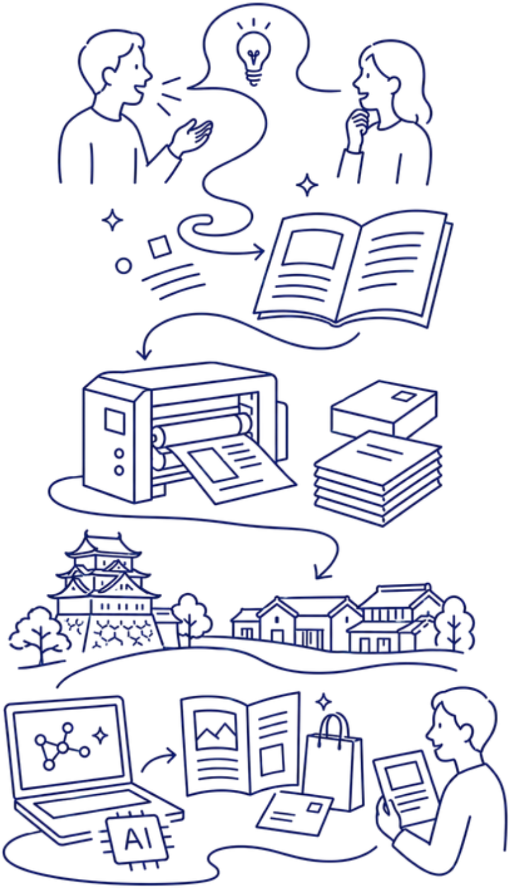
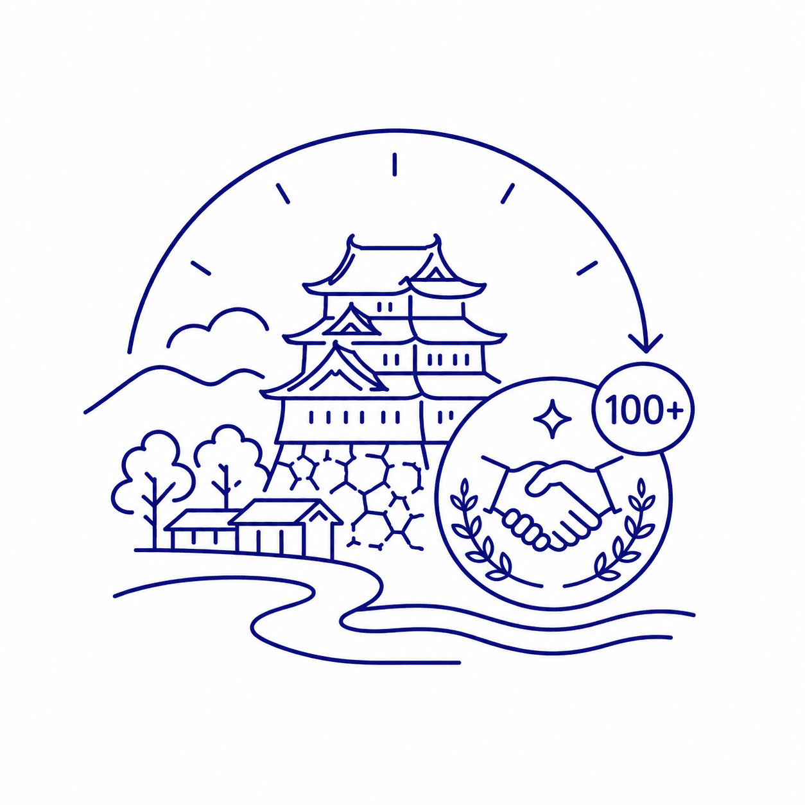
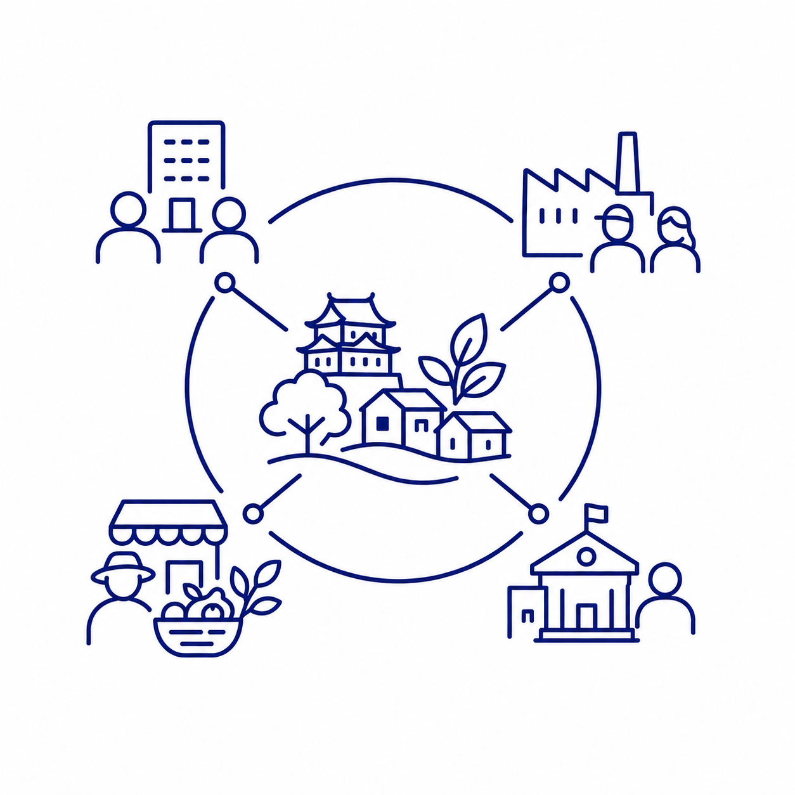
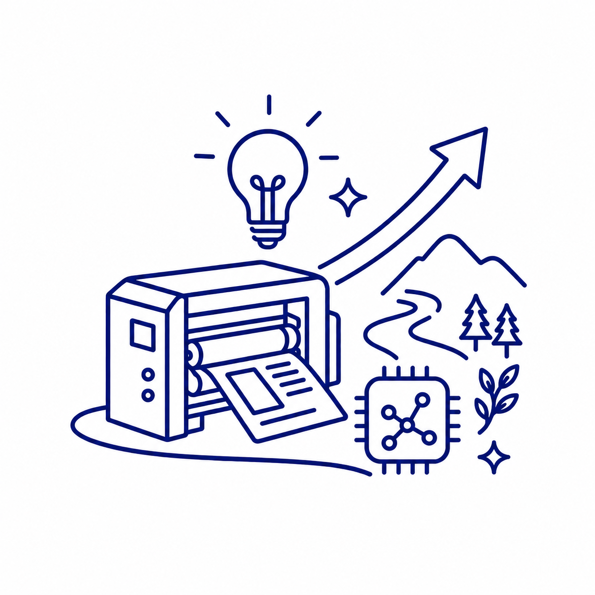

印刷を原点に、価値をかたどる。
声や想い、情報や物語は、そのままでは届く範囲に限りがあります。けれど、言葉になり、紙になり、デザインになり、仕組みになることで、より多くの人へ届き、記憶に残り、次の価値へとつながっていきます。
私たちは、岡崎で培ってきた印刷技術と地域とのつながりをもとに、企業の想いを伝える印刷物、地域の物語を宿した紙づくり、生成AIを活用した情報整理・発信支援を行っています。

私たちは、印刷を「紙に刷る仕事」だけだとは考えていません。印刷とは、想いや情報に形を与え、人へ届け、時代に残していく仕事です。
かつて声で伝えられていた知恵や物語が、文字になり、紙になり、印刷物になることで、より遠くへ、より多くの人へ広がっていきました。その原点にあるのは、見えない価値を「かたどる」力です。
岡田印刷は、大正6年の創業以来、岡崎の地でその力を磨き続けてきました。そして今、印刷技術とデジタル・AIの力を組み合わせ、より多様な形で価値をかたどることができます。

大正6年の創業から、岡崎の企業や地域と共に歩んできた信頼の歴史。地域に根ざした印刷業として積み重ねた技術と経験が土台にあります。

企業、団体、生産者、自治体。岡崎の地で育まれた多様なネットワークが、地域資源ブランド化や地域課題解決の基盤となっています。

印刷業の変化に向き合い続け、地域資源の活用や生成AI支援へと事業を拡げてきました。老舗の誇りと、新しい時代への挑戦を両立します。
岡崎・三河で生まれた「八丁味噌紙」プロジェクトを皮切りに、「地元の銘紙プロジェクト」として、全国各地の地域資源を活かした紙づくりを展開していきます。印刷会社としての原点を大切にしながら、これからの時代に必要な価値をかたどり続けます。